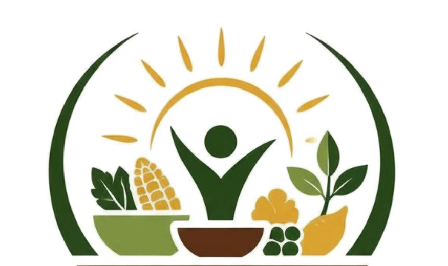

Seline Awuor
Founder / Executive DirectorA brief biography describing their role, interests and contribution to food justice.

HAKI MEZANIYOUNG LEGAL VOICES FOR FOOD JUSTICEA youth-led civil society association
Young Legal Voices For Food Justice
We connect the right to food with the rights, institutions and decisions that shape how people grow, access, afford and enjoy adequate food.
The right to food is connected to every part of life
HAKI MEZANI is a youth-led civil society association committed to advancing the right to food and promoting food justice in Kenya.
Grounded in Article 43(1)(c) of the Constitution of Kenya, we understand food not merely as a basic human need, but as a fundamental human right connected to dignity, equality, livelihoods, participation and social justice.
We recognise that food insecurity cannot be addressed in isolation. It is shaped by laws, policies, public resources, power relations and the conditions in which people live.
“The right to food does not exist in isolation. It is shaped by the rights we hold and the decisions made around us.”
HAKI MEZANIThe people behind the movement
We are a collective of young voices committed to advancing food justice through law, research, advocacy and community engagement.
A brief biography describing their role, interests and contribution to food justice.

A brief biography describing their role, interests and contribution to food justice.

A brief biography describing their role, interests and contribution to food justice.

A brief biography describing their role, interests and contribution to food justice.
Our thematic areas
We examine the intersections between food, human rights, governance and the systems that influence access to adequate and nutritious food.
The constitutional right to food, dignity, equality, access to justice and the protection of economic and social rights.
Land rights, gender equality, agricultural livelihoods and the barriers that shape who produces and accesses food.
Public participation, budgeting, policymaking, public expenditure and accountability in food-related decisions.
Food safety, nutrition, affordability, consumer protection and fair, sustainable food systems.
Youth leadership, legal literacy, community engagement and meaningful participation in decisions affecting food.
Exploring connected issues such as climate justice, environmental protection, education and the right to development.
From knowledge to action
Producing legal and policy research that makes food rights visible, understandable and actionable.
Engaging institutions, decision-makers and communities to advance rights-based approaches to food justice.
Making information about the right to food accessible through public education and community engagement.
Creating opportunities for young people and communities to contribute to policy and public decision-making.
Young people are not just the future
HAKI MEZANI seeks to create spaces where young people can learn, organise, research, advocate and participate meaningfully in decisions affecting food systems and the right to food.
Through youth-led programmes, we aim to nurture informed, engaged and collaborative voices for food justice.
Be part of the movement ↗KNOWLEDGE.
VOICE.
JUSTICE.
There is a place for your voice
Food justice requires collective effort. Whether you are a student, researcher, community organiser, legal practitioner or an organisation working towards social justice, there is room to learn and work together.